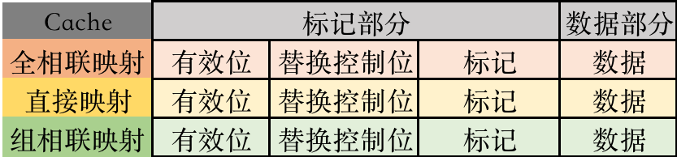
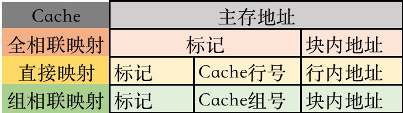
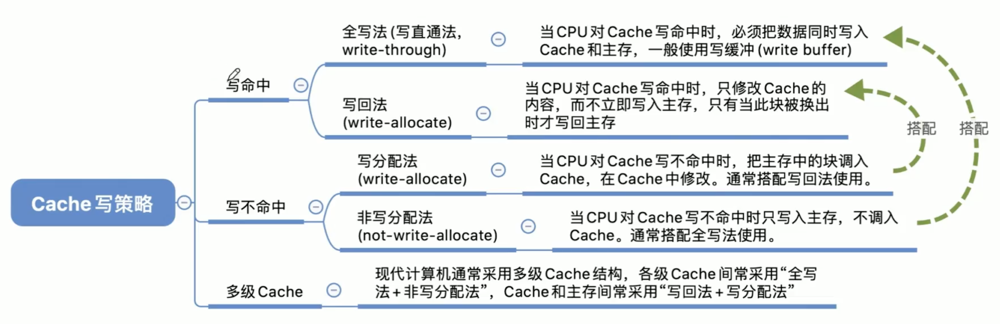

2022.11.14
[toc]
本专题主要归纳存储系统的题型
🔑主存储器
[高位 <- --- -> 低位]
高位交叉编址，高位的比特代表体号
低位交叉编址，低位的比特代表体号
🔑主存储器
🔑主存储器
SRAM各种线（SRAM没有地址复用技术）：
1024x8芯片的地址线：$2^{10}=1024\to$地址线10根（1024代表1024个存储字）
片选线：有几片就几根（一般1根）
DRAM各种线（默认采用地址复用技术）：
1024x8芯片的地址线：$2^{10}=1024\to$地址线10/2=5根
地址复用技术代表行列地址两次传入，地址线/2，DRAM一般采用地址复用技术
位扩展法：一个存储字变得更长。eg. 64Kx1的芯片扩展成64Kx8的芯片
字扩展法：存储字数量变得更多（地址变长，扩展高位）。eg. 8Kx8的芯片扩展成64Kx8的芯片。
字扩展之前的地址：[xxxx]，字扩展后的地址：[xxx(字扩展出来的)][xxxx]
Cache行存储内容：

主存地址的划分：

